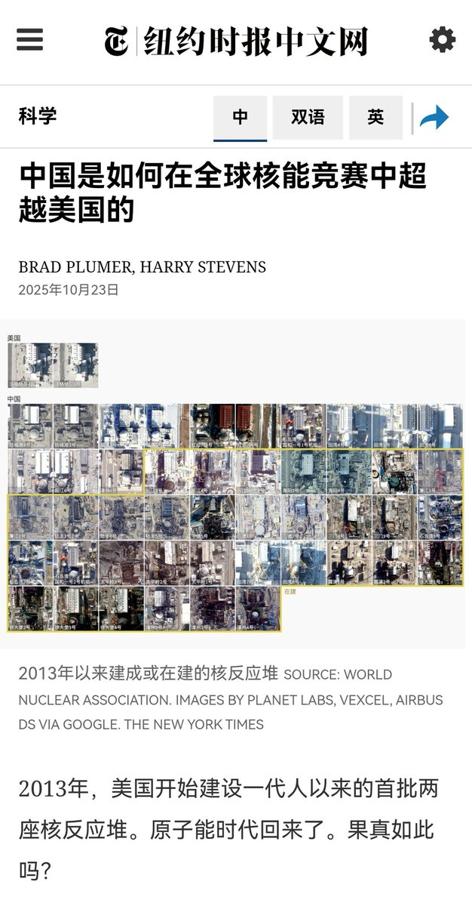

Warma广场
@Warma_Plaza
@3596675596com 日出日落，四季轮回，潮涨潮落，你方唱罢我登场...ᓖ( •́︿•̀ )ᓙ
兴，苍生苦；衰，万象落，众生甚苦；亡，如火如荼，众生皆为尘土...(´•ω•̥`)
我恨人类...(`へ´*)⺁

沙漠之狐 埃尔温·隆美尔
@3596675596com
说一个悲伤的事实😋
中国开始从追赶者转变为被追赶者
中国是追赶者的时期，是大殖子、自由派大量繁殖的时期
如今风水轮流转，轮到美国追赶中国了😋
当美国的有识之士开始意识到，美国需要向中国学习才能追赶中国的时候，标志着大殖子、自由派在中国从曾经在舆论场不可一世，转变为过街老鼠🤡 https://t.co/je9bmB58Pe